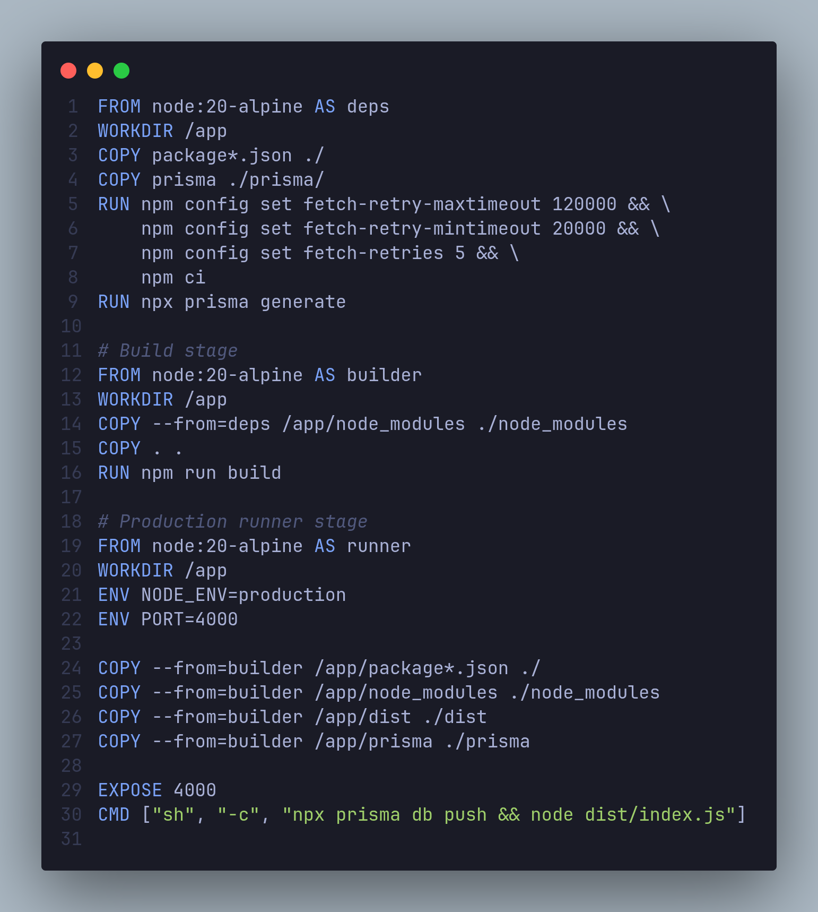
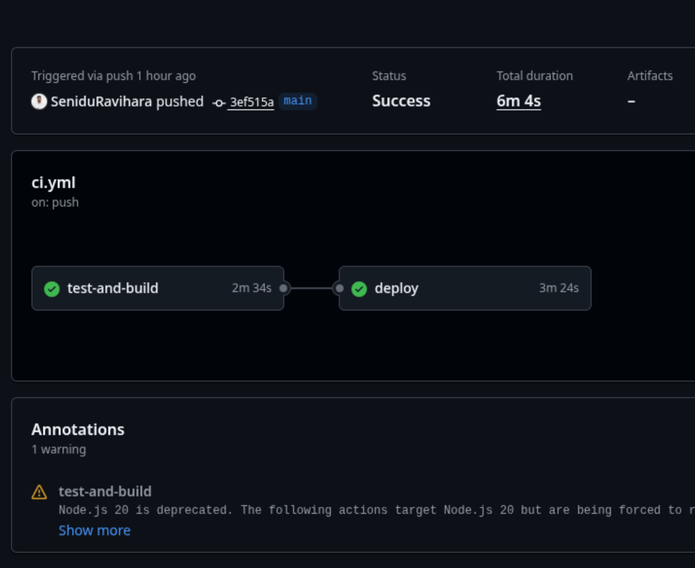
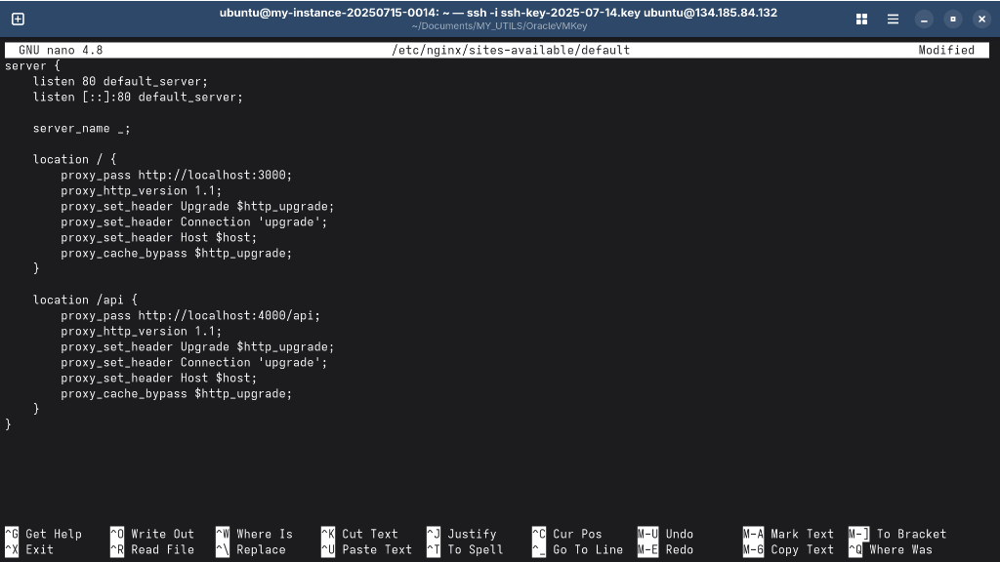
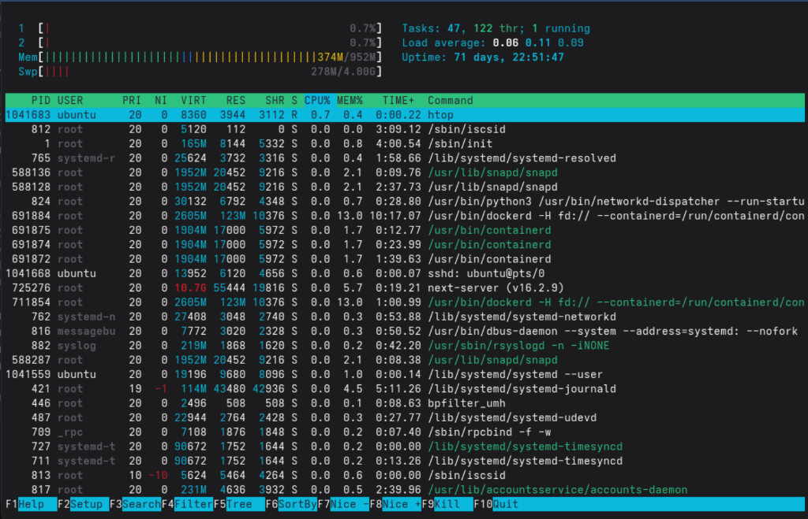
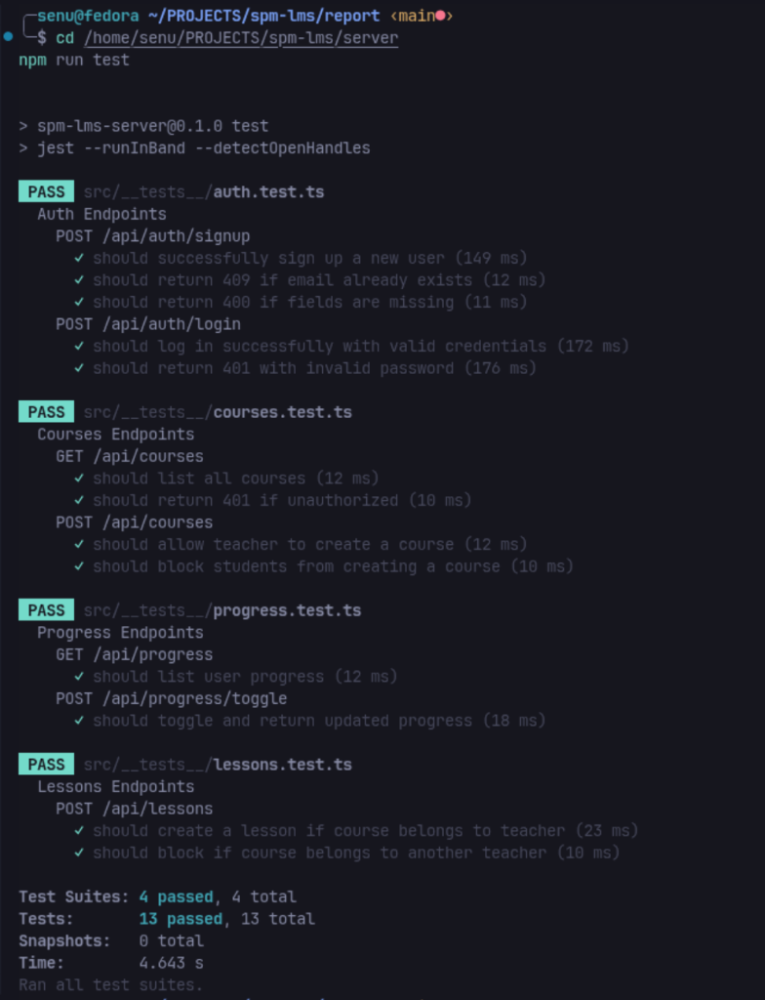

Full-Stack LMS with Agile Scrum & CI/CD Automation · July 2026
Prisma schema, Neon DB connection, JWT auth middleware, Core REST API routes, seed scripts
Next.js dashboards, Auth context, course checklists, real-time progress bars, animations
Multi-stage Dockerfiles, docker-compose networking, Jest & Supertest integration tests
GitHub Actions pipeline, Oracle VPS config, Nginx proxy, swap memory, live deployment
feature/auth-jwt)
Three stages: deps → builder → runner
From 1.5 GB down to < 250 MB
Single file manages both client + server containers with shared networking
npm ci + npx prisma generategit pull + docker compose up --build



Next.js next build killed by OOM killer on 1GB RAM
CI pipeline TypeScript build failed — generated files not in source tree
npx prisma generate step before every build & test jobContainer-to-container requests blocked by cross-origin policy
NEXT_PUBLIC_API_URL build argsInitial image builds exceeded 1.5 GB — too large for low-RAM VPS
http://134.185.84.132/